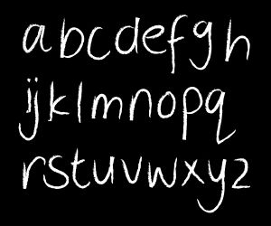

O Professor A.B.C. (António Barroso Carvalho) estava a ler um recente livro de programação quando reparou numa frase que, apesar de usar 22 caracteres (incluindo espaços e pontuação), apenas continha 11 letras diferentes:
"Programar é divertido!"
Nota que as letras usadas são precisamente 'A', 'D', 'E', 'G', 'I', 'M', 'O', 'P', 'R', 'T' e 'V'. O professor começou então a pensar qual seria a maior subsequência desta frase que continha apenas um determinado número de letras (por maior entenda-se a mais comprida, ou seja, a que tem maior quantidade de caracteres). Por exemplo, se apenas forem permitidas 6 letras diferentes, a maior subsequência que se consegue construir é:
"r e divertid"
Esta sequência tem 12 caracteres e apenas usa 6 letras diferentes: 'D', 'E', 'I', 'R', 'T' e 'V'.
E se em vez de 6 for um outro número máximo de letras diferentes? E se a frase for outra? Tens de ajudar o professor!
Dada um número inteiro M e uma frase constituída por letras, espaços e respectiva pontuação, a tua tarefa é descobrir qual a maior subsequencia consecutiva de caracteres da frase que usa no máximo M letras diferentes. Em caso de empate, deves escolher a subsequência que aparecer primeiro.
Na primeira linha do input vem um único número inteiro M indicando a máxima quantidade de letras diferentes permitida (1≤M≤26).
Na segunda linha vem uma frase constituida unicamente por letras, espaços e pontuação. As letras nunca são acentuadas nem cedilhadas e tanto podem ser maiúsculas como mínusculas (sendo que um 'A' é a mesma letra que um 'a', por exemplo). Os espaços vêm representados no input pelo caracter underscore ('_'). Os sinais de pontuação que podem acontecer são os seguintes: '!', '?', '.', ':', ';' e ','. A frase nunca terá mais do que 1 000 000 caracteres.
Na primeira linha do output deve vir um único número inteiro indicando o tamanho da maior subsequência encontrada que apenas usa um máximo de M letras diferentes. Nota que para o cálculo do tamanho de uma subsequência contam todos os caracters, mesmo os que não são letras. Já para efeitos de limitação, interessam-nos as subsequência que no seu interior não tenham mais do que M letras diferentes.
Na segunda linha deve vir reproduzida a subsequência em si, tal como aparecia na frase. Caso existam várias subsequências máximas deves colocar aqui aquela que começa primeiro.
Para um conjunto de casos de teste valendo 40% dos pontos, o
tamanho da frase é inferior ou igual a 300.
6 Programar_e_divertido!
12 r_e_divertid
11 Programar_e_divertido!
22 Programar_e_divertido!
3 Olimpiadas_Nacionais_de_Informatica
5 adas_